Context
Synbio Technologies has accumulated more than 10 billion bases of real synthesis orders: successful builds, failed sequences, and hard cases that rarely appear in public datasets. The AIDD project asks a direct question: can that operational history become an AI advantage?
The answer is a model stack spanning eight service lines — gene synthesis, oligo synthesis, DNA libraries, RNA, gene editing, protein expression, antibodies, and peptides — connected to Synbio's wet-lab build and test capabilities.
My role sits at the bridge between the US operations side and the AI/AIDD teams: translating service workflows into model requirements, evaluating the outputs, and connecting computational design to experimental validation.
What I did
- Mapped 30+ AI models across eight Synbio service lines, including gene synthesis, antibody discovery, mRNA, protein expression, and DNA storage.
- Helped define the AI-assisted gene synthesis workflow: complexity index (CI), Syno Codon, AI-TAT delivery prediction, and AI Assembly breakpoint selection.
- Worked across the AIDD small-molecule platform, SynoAb antibody design, codon/UTR optimization, AI-designed protein expression, and DNA data storage.
- Connected model outputs to wet-lab readouts — expression, binding, purity, folding, and sequencing — so the design loop is measured, not just predicted.
- Framed the strategic shift from a data-rich synthesis CRO to an AI-in-the-loop biological design partner.
Key results
- Synthesis data
- 10B+bases of real order history
- AI model stack
- 30+models across 8 service lines
- Average TAT
- 18 → 9days after AI-TAT
- Complex fragment
- 37,848bp at 100% sequence accuracy
- AI-TAT reduced average gene-synthesis turnaround from roughly 18 days to 9 days after launch.
- Synthesis Success Calculator reached F1 0.928 on 251 unseen DNA fragments; repeats were the strongest predictor of failure.
- SynoAb / PD-L1 case: two AI-designed leads with BLI KD values of 29 pM and 149 pM; the program delivered ≥5 unique clones in 12 weeks with EC50 ≤ 8 nM and ≥25 mg/L expression.
- AI codon optimization rescued a poorly expressed, insoluble enzyme; the optimized sample reached 6.0 mg/L soluble yield with 55% GC and a −18 kcal/mol RBS ΔG.
- 37,848 bp assembly: a highly repetitive fragment was assembled in two rounds of in-vivo yeast assembly with 100% sequence accuracy.
- mRNA and protein: combined codon + UTR design produced RheDesign2 with >2× the fluorescence of external designs; an AI-designed protein reached ≥15 mg/L, >95% purity, and 89% correct folding in HEK293.
- DNA storage: ~1.5 MB of digital files encoded into ~120,000 oligos, assembled into ~5 kb constructs, and decoded at ≥99.9% accuracy.
Selected figures
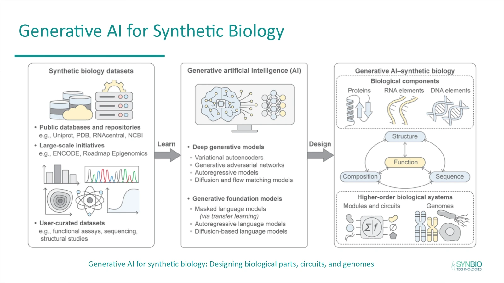
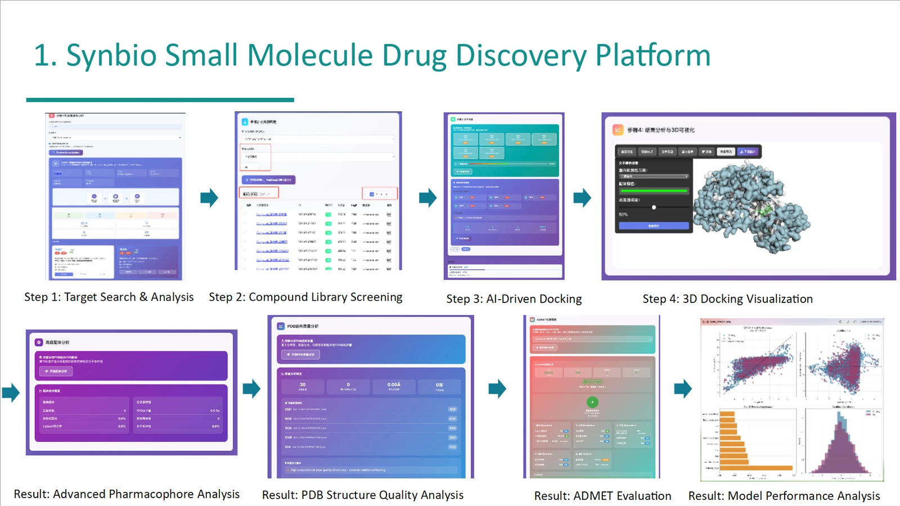
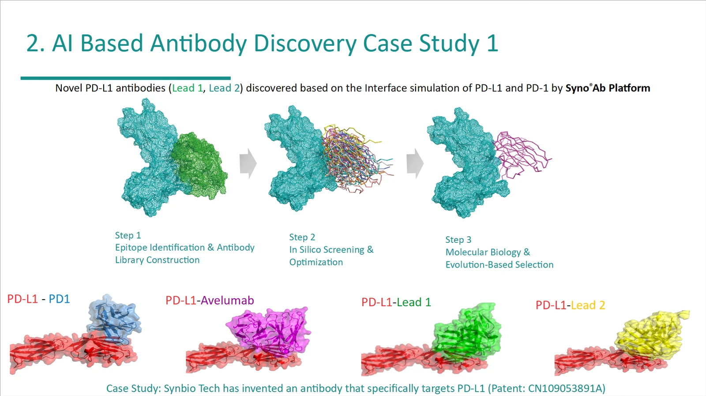
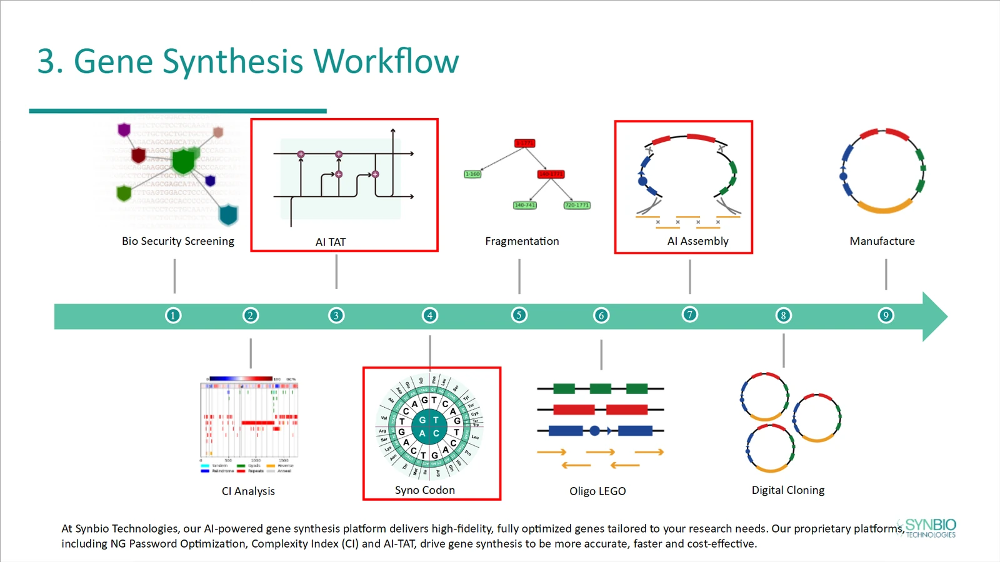
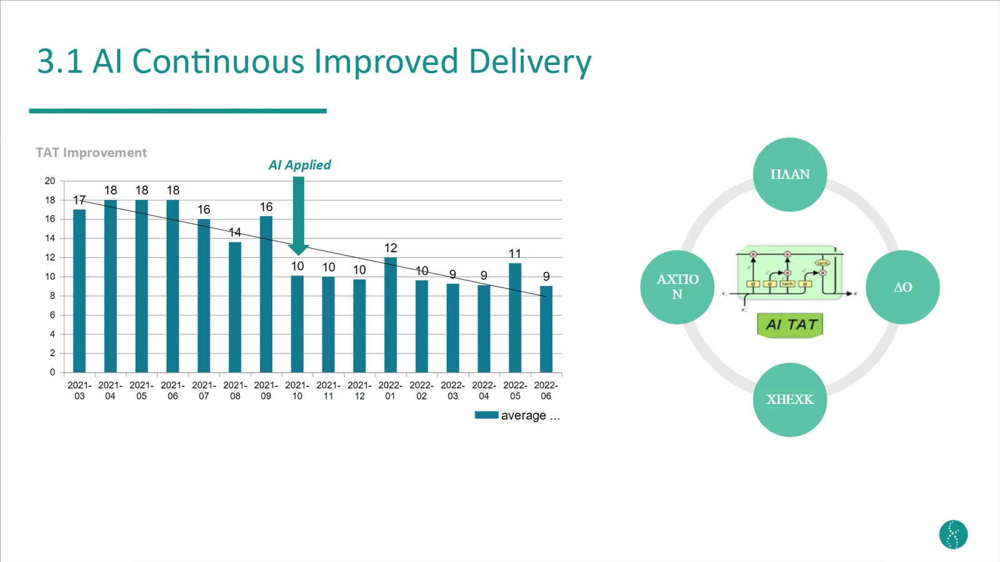
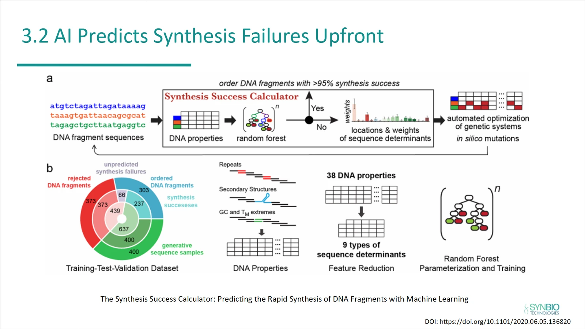
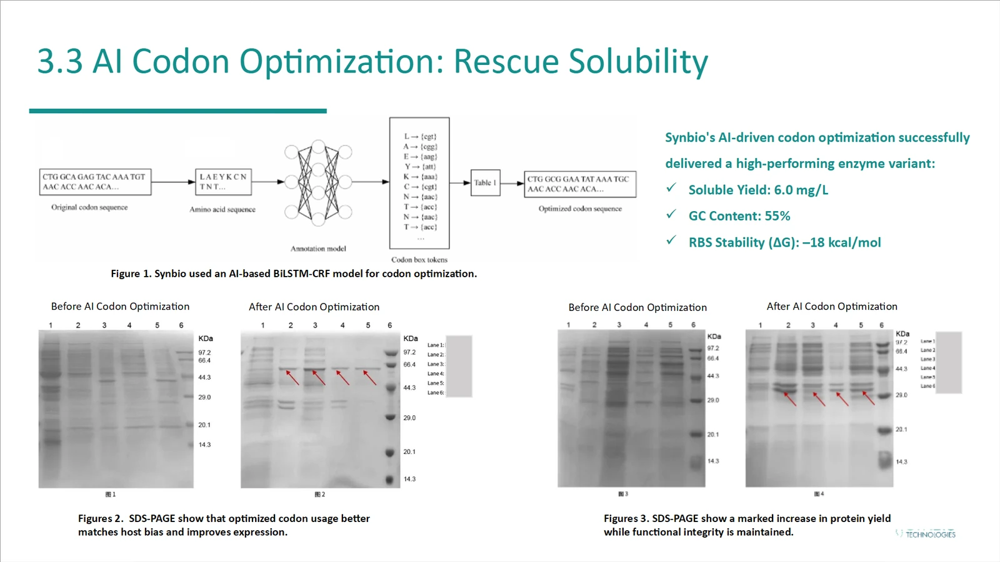
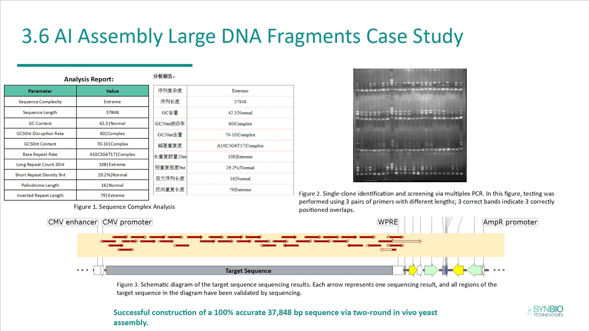
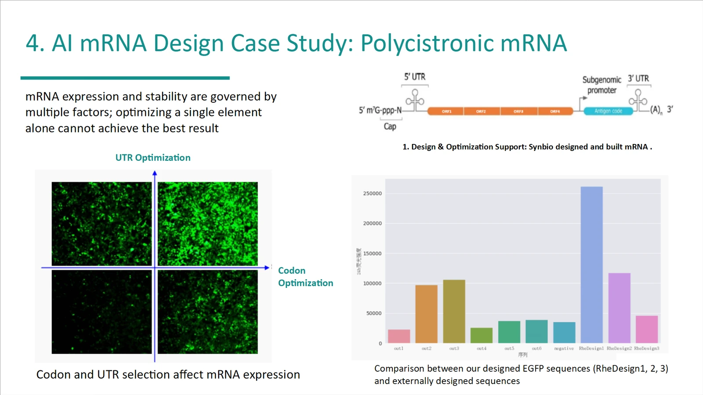
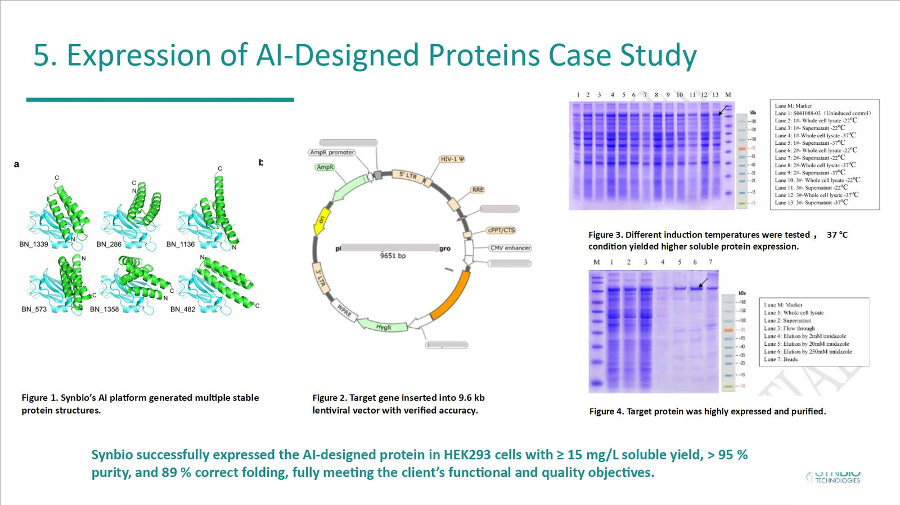
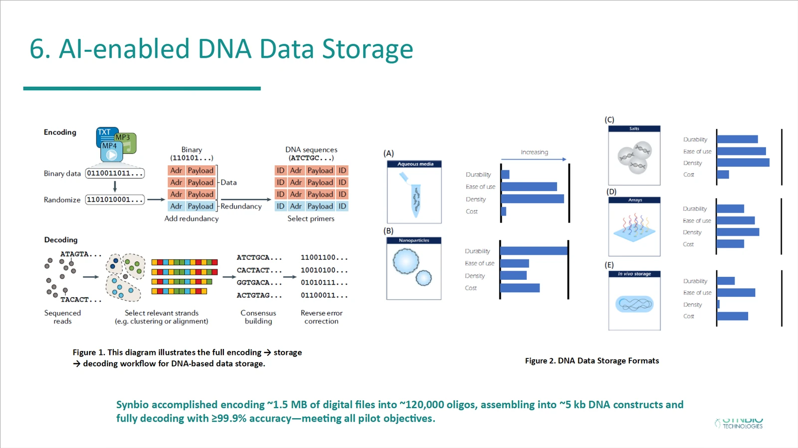
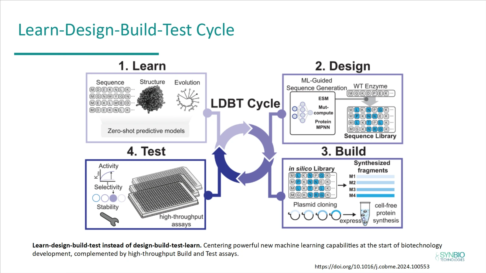
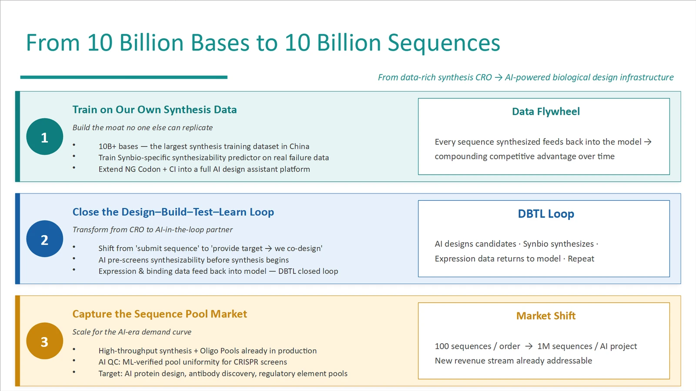